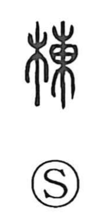

棟

Uncategorized
Kun: mune, munagi | On: tou
ridgepole ・ roof ridge ・ building ・ ward
Explanation
A phono-semantic character with 東 supplying the on reading tou. The Shuowen explains it as the munagi, the ridgepole—the timber that runs along the apex of a roof—and by extension it also means the roof ridge and, more broadly, a building. 梁 names the horizontal crossbeam that supports that ridge, and together 棟梁 (ridge and beam) came to denote a leading figure in a group. The character also appears in compounds such as 病棟, where it refers to a single building block or ward of rooms within a hospital.